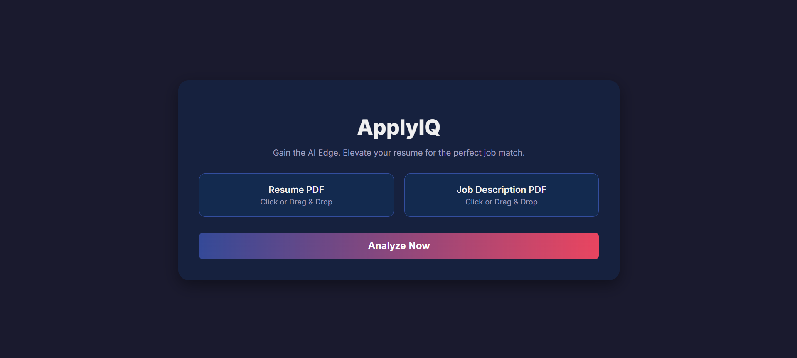
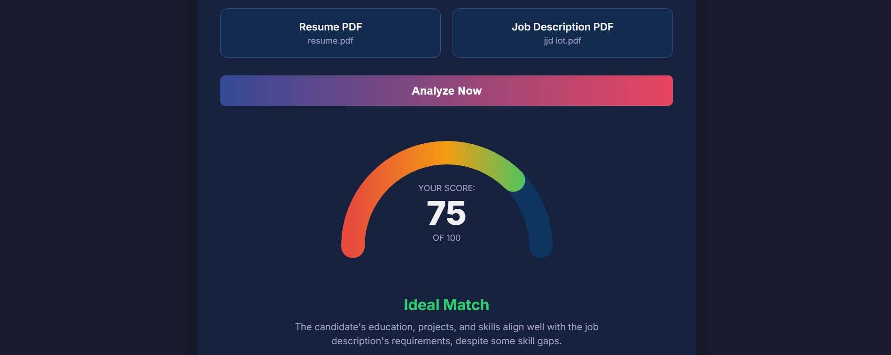

ApplyIQ - AI Resume Analyzer
n8n
Google Gemini AI
JavaScript (ES6+)
HTML5 & CSS3
GitHub Pages
Overview
ApplyIQ is a modern web application that provides job seekers with instant, AI-driven feedback on their resumes. By uploading a resume and a job description, users receive a "Fit Score" and a detailed analysis of their application's strengths, weaknesses, and missing keywords. The backend is powered entirely by a custom-built **n8n workflow** that orchestrates PDF text extraction and sends a detailed prompt to **Google's Gemini AI** for the analysis.
- 🧠 AI-Powered Analysis: Leverages Google Gemini for deep contextual matching.
- 📊 Dynamic "Fit Score": A sleek, animated gauge meter provides a score from 0-100.
- 📝 Actionable Feedback: Generates clear lists of Pros, Cons, and Missing Keywords.
- 🚀 No-Code/Low-Code Backend: The entire server-side logic is built and managed in n8n.
- 💻 Modern UI:** A stunning, fully responsive front-end built with Vanilla JS, featuring animated backgrounds and interactive file uploads.


Future Improvements
- 📋 Cloud Deployment: Migrate the local n8n workflow to a cloud server for 24/7 uptime.
- 🔄 "Re-analyze" Feature: Allow users to edit their resume text on-page and see the score update.
- 💾 Historical Tracking: Integrate a database (e.g., Baserow, SQLite via n8n) to save and compare analysis history.
- 🗣️ Natural Language Suggestions: Enhance the AI prompt to generate specific sentence suggestions for resume improvement.